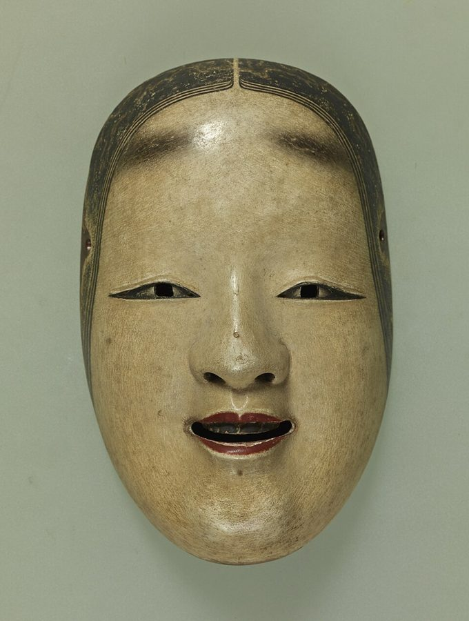
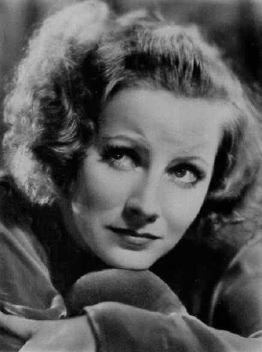
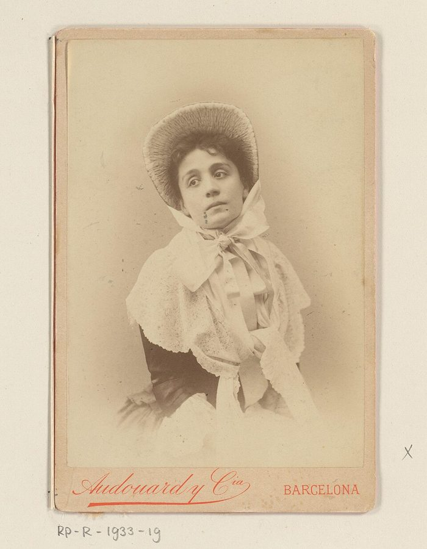

Tell yourself that this has never happened to you before
… that this has never happened to you before …
译本：「告诉自己这件事之前从未发生在你身上」
跟自己说：这事你以前从没碰到过
原文整句是斜体，作者说这是他最后才学会的一招。节末他又给它起了个名字，带连字符的 This-is-for-the-first-time trick，像在给一个小发明贴标签。
这一页两节，讲两种用面具的场合。§12 把面具搬进有剧本的戏：面具天生爱即兴、不肯重复，作者怎么哄它照台词演，排他自己的戏时又出了哪些怪事。§13 换一种面具：盖住整张脸的悲剧面具，靠静止起作用。作者从嘉宝的脸、一部威尔士纪录片、献花圈的人身上找这种面具要的状态，最后是用杂志照片做的面具。读的时候抓两件事：面具「真的在经历」是什么意思，全脸面具为什么和高地位连在一起。
内容提示：§12 讲作者自己的一出戏时，列出的剧情里有性暴力；§13 末尾几段记的是课上用照片面具演的两场强奸戏，其中一场的受害者是孩子，原书写得很细。本页只讲手法，不复述情节。不想读那几段，§13 读到「关注」面具那一段就可以停。

上一页讲一个具体的面具（流浪儿）和不戴面具也能做的入门练习，用的都是只盖上半张脸的角色面具。这一页先把这种面具放进剧本（§12），再转到这一篇开头就预告过的另一种：全脸的悲剧面具（§13）。§13 把第二篇的地位接到了面具上。下一页（§14）作者回答一个大家都会问的问题：面具危险吗？
作者全篇用「附身」「面具真的在经历」这样的说法，这是他描述演员状态的词，来自课堂观察和演员的感受，不必当成真有什么东西进了身体；他自己也写到，面具被飞进来的一只蛾子分了心，演员会收回控制、叫人拿镜子来。
面具的脸明明不会动，观众看到的表情、演员感到的真实，是从哪里来的？
读的时候带着这几个问题。不用先找答案，读完回来对照「检查一下理解」。
§12 短，像一份给导演的工作笔记：先说面具为什么天生适合即兴喜剧、不适合正规剧场，再讲他怎么一步步把面具放到台词上，中间插进排他自己的戏时的几件事，最后回到剧场里的实务。§13 长得多，结构也松：从 Devine 的第二堂面具课和科波的手帕出发，绕到嘉宝的脸和头颈的角度，提出半脸、全脸和地位的对应；接着是 Devine 的练习、一大段引来的 Dorcy 仪式和五个只列了题目的练习；然后突然讲起一部多年前看过的纪录片，从它引出「高地位的庄重」；最后是他自己的照片面具，以两场极重的课收尾。Dorcy 那段是长引文，可以快读。
作者落在哪：面具进了剧本也能「真的经历」，诀窍是每次都当第一次；全脸面具是另一种出神，要静止和简单，它和半脸面具的差别，在某种程度上就是低地位和高地位的差别。
这一页是原书和译本「面具与催眠」一篇的第 12、13 节。粗体是本站给的节名，下面是译本的节号和小标题、这一节在译本电子书中开头的几个字（搜它就能跳过去），再下面是英文原文的开头。每节标了档：「先读」是这本书最精彩、不读就错过的，「有空」好看但跳过不丢线。读完打个勾。
先把这一页用到、作者默认你懂的几个概念讲一遍。讲的是概念本身，作者拿它推出什么，读原书时自己看。
演员的老难题：同一场戏要演几十遍，每一遍都得像头一回发生。美国演员 William Gillette 1913 年有一篇讲演，题目就叫《表演中「第一次」的幻觉》，说台上的人要显得事先什么都不知道。这一招不只演员需要：第五次给新同事讲同一套流程，每天对客户说同一句开场白，怎样才不像在背书，是同一个问题。作者的办法很直接：重演之前，让演员对自己说，这件事以前从没发生过。
注意它和背台词不矛盾：词是背熟的，「第一次」管的是此刻的反应。
在这一页：§12 中段，面具不肯重复的难题靠它解决；节末作者说，学会这一招以后，面具每场会做出大致相同的事。
面具大致有两种。半脸面具只盖住上半张脸，露出嘴和下巴，能说话，前几页讲的面具（作者说的角色面具）和意大利即兴喜剧的面具都是这一种。全脸面具把整张脸盖住，戴着一般不说话，脸上没有一处能动，观众的注意力全落在那张脸和身体的姿势上。欧洲剧场里，科波和他的侄子圣-丹尼斯在二十世纪二三十年代拿它训练演员，Devine 的面具课承自圣-丹尼斯；后来 Lecoq 的「中性面具」也出自这一路。日本能剧的面具是另一种传统里的全脸面具。作者沿用 Devine 的叫法，管它叫悲剧面具，大写。
在这一页：§13 一开头就是 Devine 的第二堂面具课。这一节里的练习、嘉宝、照片面具，讲的都是全脸面具。
我们看一个人的表情，以为看的是五官。其实头往哪边偏、下巴抬多高、脖子和肩膀成什么角度，一样在传递情绪。同一张证件照式的脸，头微微低着和头仰起来，给人的感觉可以完全不同；画家和摄影师常靠调整头的角度来改变一张脸的情绪。面具的五官是死的，能变的只有这些角度，所以面具最能让人看清这件事。
在这一页：§13 作者拿嘉宝和一张杂志封面说明它，认为面具的「表情变化」靠的就是这个。
这是作者把第二篇的地位套到面具上的说法，不是剧场里通行的分类。作者在前几页说，新生的半脸面具像小孩：好奇、贪玩、动个不停。全脸面具要的是另一种状态：静、直、慢，不做多余的小动作。作者管它叫「高地位的庄重」（high-status seriousness），日常里也看得到：在典礼上献花圈的人、刚经历灾难的人，身体会自己变得笔直、平稳。这里的「高」不是摆架子，而是不再做那些安抚别人、让自己自在的小动作。作者说的是「某种程度上」可以这样分。
在这一页：§13 前半先提出这个对应，拿巴厘岛出神仪式里两种附身来对照；后半从电影《大卫》讲到「高地位的庄重」。
作者在课上用过、照着就能玩的；个别几张是本站照书里的段落改的，卡里写明了来历。几个人、怎么玩、看什么写在卡片上；「先猜」那一栏是书里的课堂上发生了什么，先自己猜，或者先玩一次，再点开。全书的游戏卡汇总在游戏汇总。
译本：「告诉自己这件事之前从未发生在你身上」
作者说，面具头一回照着镜子接词，一切突然变得真实，反应和演员原本打算的都不一样；可一要它重复，它就坚持即兴，硬逼着演就会熄火，剩下的只是演员在装面具。他学会让面具对自己说「这事以前没发生过」之前，这个难题看来无解；学会以后，面具每场会做出大致相同的事。
这张卡是本站照 §12 那句口令改的，作者没有在课上这样带过：书里这句口令是对已经能进入面具状态的演员说的。读者拿它练的是「重复还要新鲜」，不是出神。
译本：「乔治的第一个练习」
作者说大家都做得比要求的多：手无缘无故地摸来摸去，头抬得不平，还在抖。他猜是因为大家觉得得「演」点什么，或者根本不习惯做这么简单的事。脸一遮住，身体的每个动作都被放大了。Devine 等技术过关以后，才让演员自己想一个悲伤的背景，而且从不问是什么。
作者提过全脸面具会让有幽闭恐惧的人难受，这样的人别做。给自己配的悲伤背景，挑自己承受得住的。
从一部 1951 年的威尔士纪录片。片中的学校看门人由本人出演，礼堂地板擦了三分之一，送电报的男孩进来，电报说他儿子死了。他没有为了表达什么而做任何事，只是好像节奏变了；男孩走后，他接着擦完剩下的。作者说演员来演多半会去表现悲伤。他也承认只看过一次，记忆未必准。
作者要的是真正会击垮自己的消息，情绪会上来。读者自己试，挑一件让你难过、但想起来不会出事的事；最近正经历丧失的话，换一个题目。
译本：「“照片”面具」
作者说人们一看到就倒吸一口气，会害怕；面具朝观众走过去时，常有人慌忙从椅子上爬起来躲开，一边紧张地笑，一边真的挪开。戴的人反而觉得很安全，观众的惊呼还让他更得意。作者的解释是：平时我们不停地动脸、动头来安抚别人，这些小动作一没了，我们就觉得面具像超自然的东西。
作者自己说，用照片面具练很久（比如一小时），紧张会让人受不了，他有时只好停课，因为大家都觉得恶心。本站的提醒：只做一两分钟，有人陪着；§13 末尾那几场沉重的题材不要拿来试。作者在下一页还说，面具练习都该分级。
按在书里出现的顺序排，标题前是节号。只讲到读懂这一页需要的程度。
意大利即兴喜剧（Commedia dell’Arte）十六到十八世纪在意大利流行、后来传遍欧洲，几个固定角色戴半脸的皮面具，演员照一张只写剧情梗概的提纲即兴演。作者在 §12 开头说，学者给它戴面具找了很多理由，偏偏漏了最明显的一条。《最后一只鸟》（The Last Bird）是作者为流浪儿和「爷爷」两个面具写的戏，面具和真人同台，讲一场殖民战争，在丹麦的哥本哈根和奥胡斯排过。同一节作者还提到，据说英国演员 Laurence Olivier（1907–1989）说过不想再演大悲剧角色，因为太痛苦；这句话的出处本站没有查到。
手帕的故事是作者听科波的侄子 Michel Saint-Denis 亲口讲的：科波有个学生演戏僵硬、只顾着观众欣不欣赏她，科波没办法，让她拿手帕挡着脸重演，她一下子放松了，演得很动人。圣-丹尼斯后来到英国办戏剧学校，Devine 的面具课就承自他；注 11 是 Devine 发给学生的一段圣-丹尼斯的文字。后来 Jacques Lecoq 和雕塑家 Amleto Sartori 把科波的「高贵面具」改成了「中性面具」，1956 年在巴黎开了学校，今天的形体戏剧课还常用它。

作者引了她的传记和两位合作者的话：演员 Robert Taylor（和她合演过《茶花女》）说她脸上的肌肉不动，眼睛却把需要的全表达出来了；导演 Clarence Brown 说她从爱转到恨，表情一点没变，印出来的胶片上却看得清清楚楚。作者说电影里最伟大的半脸面具之一是卓别林，最伟大的全脸面具之一是嘉宝；他的解释落在她的脊柱和身体上，不在脸上。

作者说，让观众的注意力始终留在脸上、不被身体分散，是伟大的悲剧演员都掌握的功夫，戴不戴面具都一样。他举的是 Eleonora Duse（1858–1924，意大利女演员，以不化浓妆、表演克制出名），又说 Rachel（1821–1858，法国悲剧女演员）「几乎可以肯定」也是。Rachel 去世的时候离作者出生还有七十多年，这一句只能是推断。同一处他还说黑泽明《七武士》（1954）里武士首领拔剑狂奔，用的仍是全脸面具的技术。
Jean Dorcy 是科波学校的学生，作者引的是他 1961 年在纽约出版的《默剧》（The Mime）里对 1922 年学校面具课的记述：一套坐着戴上面具、配合呼吸、闭眼、清空脑子的仪式。他们用的是不带表情的「中性」面具。作者自己只补了两句：闭上眼「看」眼皮里的黑暗，是常见的诱导出神的办法；Dorcy 除了戴面具必须动的地方，身体别处都不动。Dorcy 自己说这些步骤是给初学者的。
David（1951）是 Paul Dickson 编导的一部 38 分钟的短片，威尔士为英国节（Festival of Britain，1951 年英国办的全国性展览）拍的参展片。主角是矿工出身的诗人 David Rees Griffiths（1882–1953，笔名 Amanwy），他在阿曼福德一所文法学校当了多年看门人，片中由他本人出演。据影片的介绍，片中最动人的一段是他的儿子死于肺结核。作者记得的那场电报戏，本站没有对着片子核对；作者自己也说只看过一次。这部片子今天可以在英国电影协会（BFI）的网站上免费看。
Pietro Annigoni（1910–1988）是意大利画家，1950 年代中期给伊丽莎白二世画的那幅肖像很有名。作者转述：女王告诉他，平时觉得自己像个普通女人，穿上国礼服就「成了女王」。作者拿这件事和献花圈、灾难现场的人放在一起，说明在极严肃的时刻，某种东西会接管身体。
读译本时值得翻一下原文的地方：双关、行话、口语，和译本传不出的语气。灰色斜体是原文里的一小段，在英文电子书里搜它就能找到；方框里是译本这一句的译法。译错的放在下一节「译本勘误」。
对着译本读这两节时，下面这些地方会把人读歪。方框里是译本的原句，在译本电子书里搜它就能找到；灰色斜体是英文原文那一处。只收意思错了、反了、漏了的，措辞上的出入不收。全书的勘误汇总在译本勘误。
… the moves has to be abandoned …
译本：「必须放弃那些会“阻碍”行动的技术」
blocking 是剧场行话，指导演事先给演员定好在台上走到哪、站在哪，也就是排走位。作者说面具起初想往哪走就往哪走，排走位那一套只好放弃。这和第三篇的 block（拒绝对方的提议）同词不同义，读过第三篇的人别接错线。
… I don’t set the moves …
译本：「我主要关心的是他能否理解并挖掘文本」
原文：他另外给演员排台词，但不定走位（moves 接上一段的走位），只要演员把台词弄懂、背下来（learn）。「具体步骤」「挖掘文本」把这两样都说偏了：面具和台词是分开排的，演员先把词背熟。
… with the text. It was eerie …
译本：「它很恐惧」
eerie 是「诡异、瘆人」，说的是旁观的人看着那个面具挥手号叫、不肯开口，心里发毛，不是面具自己害怕。下一句作者才猜：它好像知道戏里有可怕的事要落到自己头上。
… it was a very emotional time …
译本：「那真是让人激动。涕泪横流。」
原文：好不容易把流浪儿哄进角色以后，那段时间情绪非常沉重，眼泪鼻涕会从面具的鼻孔里流出来。「让人激动」读来像兴奋，「涕泪横流」又像是旁人在哭。
… In the Mask events really happen …
译本：「在面具演出中，这都是真实发生过的」
原文说：在面具里，事情是真的在发生，戴的人把一切经历得格外鲜明；摘了面具，他们又不停地评判自己。译本读来像作者在保证前面讲的故事都是真事，意思走偏了。
… the Masks arrive with the costumes …
译本：「面具通常会在演员装扮好的情况下登场」
原文讲剧场里的老毛病：面具通常和戏服一起送到，刚好赶上彩排，演员只能戴设计好的那一个，不管它能不能让自己进入状态。译本像是在说面具上台的时机。
… have the illusion you’ve seen every …
译本：「你以为你看到的每一个细微表情不过是错觉」
原文：在大剧场后排，演员的脸只是视网膜上的一个小点，你却有一种错觉，好像看清了他每一个细微表情。其实看不清，是他的身体把情绪传了过来。译本把「错觉」安到了表情本身上。
… we experience ourselves as reading the Mask …
译本：「我们在阅读面具时实际是在感受自己」
这是 §13 的要点：我们读的是身体，尤其是头和脖子的角度，主观上却觉得自己在读面具的脸。experience ourselves as 是「自己觉得是在……」，不是「感受自己」。
… and almost certainly Rachel …
译本：「例如杜丝和拉歇尔」
原文说杜丝是例子，拉歇尔「几乎可以肯定」也是。两人作者都没见过台上的真人（杜丝 1924 年去世，作者 1933 年才出生），拉歇尔 1858 年就去世了，更只能凭记载推断，所以加了这个限定；译本把两人并列，这个保留就没了。
… or moves in a trivial way …
译本：「或小步移动时，力量就断了」
moves in a trivial way 是「动得琐碎、随意」，和前面的「平稳果断」相对，与步子大小无关。照着练的人别以为只要步子迈大就行。
… other shade found inside the eye …
译本：「那就把肉眼可见的黑色」
原文是闭上眼睛以后，眼皮里看到的那片黑、灰、橙、蓝之类的颜色，盯着它在心里无限延展。「肉眼可见」像是睁着眼看东西。作者紧接着也说，闭眼「看」眼皮里的黑暗是常见的诱导办法。
… the mask actor, sufficiently recollected, can …
译本：「面具演员拥有充沛的回忆」
recollected 在这里是老派的「收心、凝神」（灵修书里常用），说的是上面那套仪式做完、心静下来了，和回忆无关。
… to study my hypnagogic imagery …
译本：「当我想研究我的催眠意象时」
hypnagogic 是心理学用语，指将睡未睡时脑子里自己冒出来的画面，和催眠无关。作者是说他想观察这些画面时，也用闭眼看眼皮的办法。
… at too sharp an angle …
译本：「背过脸去或者急转面具的朝向都不好」
原文：面具要「呈现」给观众，转过身去不好，把面具倾得角度太大也不好，观众就看不到那张脸了。说的是角度，不是转得快慢。
… separation of figure from ground …
译本：「这种质感是一种光影的“完形”分离」
figure from ground 是格式塔心理学的「图形与背景」：面具像从周围的一切里分离出来，自己在发光。原文没有「光影」。这一处的译注又解释成阴影在观众脑中补出形象，同样偏了。
… does nothing in order to express anything …
译本：「或者为了表示什么而什么也没做」
原文：看门人读完电报，什么也没表现，或者说，他没有为了表达什么而去做任何事。译本读来像他故意不动、拿「不动」来表达，这恰恰是作者说演员会犯的毛病。
… not when the shock is on them …
译本：「不同于受到惊吓时的举动」
原文：灾难现场的人不做那些神经质的小动作，至少在震惊还压在身上的时候是这样。译本说成「不同于受惊吓时」，好像受了惊的人才会手忙脚乱；作者说的恰恰是受了重击的人会变静。
… has its own built-in lighting …
译本：「每个面具都有自己的内在灵魂」
原文是说杂志照片拍的时候就打好了光，每张脸都自带光影，所以挡在脸前像真脸。译本的「灵魂」把一句技术说明变成了神秘说法，正是读这一篇最该小心的那种。
… when it’s missing we can’t understand …
译本：「所以即使内心产生的焦虑消失了」
原文：平时我们不停地动脸来安抚别人，这种作用是下意识的；一旦它没了，我们心里生出焦虑，却说不清是怎么来的。同段 we twitch 是「我们身上抽一下、动一下」，译本：「拼命控制情绪的表达」，也偏了。
… The edges crawl about, it may …
译本：「轻抚轮廓」
原文：盯着面具看久了，它会开始变（作者说大概是眼睛累了），边缘好像在爬动。说的是眼睛看到的变化，不是叫你用手去摸。
… couldn’t really get the emotion out …
译本：「但我们无法真正调动自己的情绪」
原文：在作者的印象里，每个人都在哭，可那股情绪堵在里面发泄不出来，大家说不出话，也没法接着上课。「无法调动情绪」像是大家没被打动，意思反了。
… Scenarios using up to three actors …
译本：「即兴喜剧的剧情框架使用了多达三位演员」
注 11 引圣-丹尼斯：最多三个人演的剧情提纲，取自古典悲剧和正剧里的动人时刻。原文没有「即兴喜剧」，这段讲的是全脸面具的无声即兴，和半脸的喜剧面具正好是两路。同段末句原文是「无声即兴只能走到这一步」。
Masks aren’t ‘pretending’, they actually undergo the experiences.— §12。本站译：面具不是在「假装」，它们是真的在经历。
口气是断言，没有 I think。关键词是 undergo（承受、亲身经历）和打了引号的 pretending：作者不是说演员不知道自己在演，而是说戴着面具时，戏里的事落在他身上像真的一样。紧接着的树林例子是他的证据：同一个演员，不戴面具演得「真实」，戴上面具却真的怕了。译本：「它们是有自己的实际经历的」，读来像面具有自己的人生阅历，其实说的是此刻正在经历。
To some extent we can say that the half, or comic, Masks are low status, and the full Tragic Masks are high status.— §13。本站译：在某种程度上可以说，半脸面具（喜剧面具）是低地位的，全脸的悲剧面具是高地位的。
口气很谨慎：to some extent，we can say。这一句把第二篇的地位接到面具上，是 §13 最有启发的一步。容易被读成一条定律：所有喜剧面具都低、所有悲剧面具都高。作者紧接着拿巴厘岛出神仪式里的两种附身来印证，例子是他挑的，没有对照。
读完这一页的两节再看。下面是作者在这两节里的主张，由本站按主张重新组织，不按原书的顺序；每条后面是节号，拿不准就回书里那一节再读一遍。
作者说，面具能毫不费力地即兴好几个小时，这是即兴喜剧戴面具最明显、却被学者漏掉的理由；放进有剧本的戏，最大的麻烦是它们不肯重复，硬逼就熄火。他的办法：面具和台词分开排，再借镜子一句句喂词，重演前让面具对自己说这事以前没发生过。学会这一招，面具就能「几乎像演员一样」用。
§12他在课上看到，同一个演员不戴面具演得「真实」，戴上面具却真的怕那个躺着的人；排自己的戏时，面具盯着纸板镰刀发呆，演死神的人下不了手，另一个面具好像知道要遭什么、不肯演。他说悲剧真经历起来很可怕；面具演员摘了面具可能反倒平平，因为不戴面具时人总在评判自己。
§12常见的解释说面具不对称、角度一变表情就变，作者认为这只在少数情况下成立：面具拿在手里不会笑，只有熟练的人戴上才会。关键是头和脖子、脖子和身体的角度。嘉宝的脸几乎不动，传情的是她的身体，观众却以为来自脸。
§13他说某种程度上半脸面具低、全脸面具高。全脸面具静止，或平稳果断地动时力量最大，一做琐碎的事就熄了；Devine 说学全脸面具像学唱歌一样难，要长期训练。人在哀悼、敬畏、灾难之后会自然变得静、直、慢，像有什么接管了身体；Devine、Dorcy、圣-丹尼斯的方法都指向这种严肃的出神。
§13作者说全脸面具让戴的人觉得安全，表情出卖不了他；照片面具更轻、更像真脸，看的人害怕，戴的人反而安心，所以学生能演得很深很严肃。他也说练久了紧张会让人受不了；起初没人选真正可怕的题材，要等这群人彼此信任、亲近了，才会跟着悲剧面具走。他强调那几场重戏的学生是他很熟的。
§13合起来：面具的力量不全在那张脸上，而在戴的人每次都当第一次、在身体的角度、在静止。半脸面具把人放开，全脸面具把人沉下来；作者把这两种差别和他在第二篇讲的地位对上了。
这本书 1979 年出版。下面挑出这一页里能被后来的研究检验的说法，分「书里 / 当时 / 今天」三栏，并给一个结论。结论判的是标题里「书里的说法：」后面那一句。全书的这一节汇总在今天怎么看。
读完作者的主张，再看它站不站得住。每一块摆出三样：主流怎么看，作者怎么看，本站的评论。最后一句是本站对这一页的总体判断。
主流看法：表演理论管这叫「双重意识」：演员一边动真情，一边还清楚自己在演。狄德罗的《演员的悖论》争的就是这件事；Konijn 2000 年的《表演情绪》用对职业演员的实地调查，重新讨论了这个老问题：演员要每晚表达强烈的情绪，同时制造出自发的错觉。
作者的看法：面具不是在假装，是真的在经历；摘了面具，人又总在评判自己。§12
本站的评论：作者描述的是演员的主观体验，这很可信：脸遮住了，不再管自己好不好看，人确实容易全情投入，这和第一篇讲的怕被看是一条线。但「真的经历」不等于台上没有一个清醒的「我」：他自己写到飞进一只蛾子，演员就会收回控制、叫人拿镜子，把面具拉回轨道。读成「演员暂时不再盯着自己」最贴切，读成「有别的东西附了身」就过了。
主流看法：剧场传统里两种面具确实是两套技术：意大利即兴喜剧的半脸面具活泼、多动、会说话；从科波到 Lecoq 的全脸、中性面具要求静止和简洁。但把它们对应到地位高低，是作者自己的说法，戏剧界没有这样的通行分类。
作者的看法：某种程度上半脸低、全脸高；哀悼和敬畏时那种高地位的庄重就是全脸面具的状态，灾难后的人会更直、更静，他猜眼神接触也更久。§13
本站的评论：这是这一页最有启发的一步：第二篇说乱动、多余的小动作显得低，这里反过来用，静止、不再安抚别人，人就显得高。拿来指导演员很好用，日常里也看得到。但证据是他挑的例子：女王的一句话、一部只看过一次的电影、他「猜」的眼神接触，没有对照。当一副好镜头，不当定理。
主流看法：今天的剧场和戏剧教育处理性暴力场面，有一套渐渐成形的做法：事先说清内容、取得同意，由亲密场面指导把动作编排固定下来，而不是让演员即兴去「找」。
作者的看法：是面具的保护和匿名，让学生演得那么深、那么严肃；起初没人选可怕的题材，要等组里彼此信任，他强调这些是他很熟的学生。§13
本站的评论：作者的观察有价值：面具确实能带人走到平时不敢去的地方，他也看得出界限，当场停了课。但「组里信任了，就跟着面具走」这个标准今天看不够：那场针对孩子的戏，是另一个班听说了前一场也想试，几个演员挑了儿童面具、女演员又跪低了身子，就顺势定下的题材；书里没写事先有谁为这样的内容做过准备。那场戏把全班压得说不出话，恰好说明需要事先的同意和由浅入深，而不只是事后停下。这一页的游戏卡因此只收轻的。
本站的总体看法：这一页值得带走三样：重复时对自己说「这是第一次」；看表情要看头颈和身体；静止本身就有力量。「面具真的在经历」当演员的主观感受读，别当附身；半脸低、全脸高是好用的类比，不是规律；照片面具那几场重戏，今天会先讲好同意和边界。
先在心里答，再点开。答错的那题，回书里把对应那一节再读一遍。
面具起初想往哪走就往哪走，导演事先定好的走位用不上，也没法让设计师先决定哪个面具演哪个角色。最大的麻烦是它们不肯重复同一场戏，硬逼就熄火。
先分开排：面具不带台词一起演场景，演员另外把台词弄懂、背熟。合起来时他站在镜子旁，面具每照一次镜子就喂一句词，演半页就停；重演前让面具对自己说这事以前没发生过。
不戴面具时，全班都说她演得很真实；戴上面具，她真的怕那片「树林」，以为那人死了，不敢靠近。作者拿这个说明面具不是在假装。
作者认为我们读的是头和脖子、脖子和身体的角度。封面连着脖子肩膀，角度是死的；剪掉以后，头一动，这张「脸」和戴的人身体的角度跟着变，它才成了一张脸。
他认为演员会去「表现」悲伤；那位看门人却没有为了表达而做任何事，只是好像节奏变了，接着把地擦完。全脸面具要的就是这种不表演的庄重。
看不见反而让戴的人更有安全感，像鸵鸟把头埋进沙里；靠着墙就不会摇晃。作者说很少有人能真正站着不动，而舞台上没有什么比绝对静止更有力量。
这些是琐碎的、安抚别人的小动作，面具的力量会一点点熄掉。作者要的是静止，或者平稳果断、慢动作的移动。
用一句话说这一页：
想一想：你见过谁在很严肃的场合（葬礼、颁奖、等一个重要结果揭晓的那一刻）一下子变得很静、很直吗？你自己在那种时刻，手和头会做什么？反过来，你每天重复说的哪句话，最需要「这是第一次」？
读过又忘了，从这里想起来。挑的是这一页最值得记住的故事、游戏和说法，不按原书顺序；每条后面是节号，想细看就回书里那一节。全书各页的这一节都收在全书回顾。
一句话：面具的力量不在那张脸上：在戴的人每次都当第一次，在头颈的角度，在静止。
排《最后一只鸟》时，戴面具的爷爷盯着铝箔包的纸板镰刀动不了，演死神的人退开说「我杀不了他」。大家缓了一个小时才重来。
§12面具不肯把同一场戏演两遍。作者最后学会的一招：重演前让它对自己说，这事以前从没发生在你身上。
§12嘉宝的脸几乎不动，导演却在胶片上看见她从爱变成恨。作者说该夸的是她的脊柱：观众读的是身体，以为在读脸。
§13纪录片里的看门人读到儿子的死讯，什么也没表演，接着擦完礼堂剩下的地板。作者把这一幕改成了全脸面具的电报练习。
§13全脸面具静止或平稳地动时，满屋都是力量，像墙上结了看不见的冰；一做琐碎的事，力量就像烛火一样熄了。
§13从杂志上剪下的脸贴在塑料板上，就是作者眼下最爱用的面具。看的人会从椅子上爬起来躲，戴的人反而觉得安全。
§13